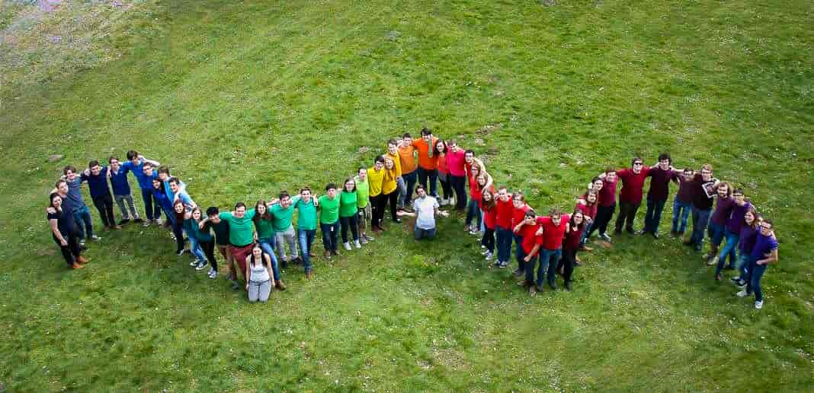

Over de ploeg

Liefste Winees
Met grenzeloze vreugde kan ik u meedelen dat het weer tijd is om u te laten verwennen op een fantastische campagneweek vol superfijne activiteiten! Ik denk dat ik voor heel Spectrum spreek als ik zeg dat we er ontzettend veel zin in hebben en er alles aan zullen doen om te bewijzen dat u ook volgend jaar in goede handen zult zijn. Hou u agenda alvast vrij van 13 tot 20 april, dan deel ik u even mee waarom u die week liever op onze campagne wilt zijn dan waar dan ook:
Woensdag bent u naar goede gewoonte welgekomen op de Winabar, die deze keer in handen van het opkomend Barteam ligt. Op deze Star Bars bieden we u graag een krachtig shotje en cocktail aan: de red en de blue lightsabers. Donderdag zien wij u graag op de campus voor een hotdog, een soepje of allebei - wat u maar belieft -, en 's avonds zakken we opnieuw af naar 't RC voor een zeer fancy karaoke met stijlvolle cocktails en hapjes. Vrijdag kunt u opnieuw op de campus bij ons terecht voor spek met eitjes of verloren brood.
Na een rustig weekend zien wij u graag terug op een super geeky LAN Party. Tornooien, bordspellen, dance dance revolution, arcadegames en veel meer: voor ieder wat wils zou ik zo zeggen. Ook maandag kan u voor u middagmaal bij ons terecht. Dan gaan we BBQ'en op de campus en daarmee een goede font leggen voor een paar uur later, wanneer het tijd is voor onze cantus. Deze zal in het thema Expeditie Robinson zijn, dus verwacht u aan veel spanning en competitiviteit. Op dinsdag organiseren we een hele dag in één sprookjesachtig thema: Efteling. Met een fabelachtige sprookjeslounge, een schommelschip voor de echte durvers, Grote Boze Wolf met frietjes voor wie honger krijgt van al dat leuks en suikerspinnen voor de zoetebekken, belooft dinsdag een dag vol avontuur te worden.
Dinsdagavond bent u van harte welkom op het kiesdebat, waar u de kans krijgt om ons kritische vragen te stellen. Daarna hebben we u hopelijk overtuigd om voor ons te stemmen, waar u op woensdag de kans voor krijgt. U kan hierbij ook op uw favoriete lolploeg en uw opkomende onderwijsvertegenwoordigers stemmen, dus ik wil graag benadrukken dat het belangrijk is om hier even tijd voor te maken. Als u flink gestemd heeft, kunnen we dan hopelijk diezelfde avond onze overwinning vieren op de Spek en Rum bar, waarvan de naam voor zich spreekt.
Ik hoop dat de boodschap daarmee duidelijk is: Spectrum heeft een topweek voor u achter handen en we hopen dat u er in zo groot mogelijke mate deel van zult uitmaken. Ik sta te trappelen van ongeduld en hoop u veel te mogen zien op onze campagne. Tot gauw!
I know what motivated you was not just a political campaign. It was your love of our country. - Alan Nunnelee
Carolyne